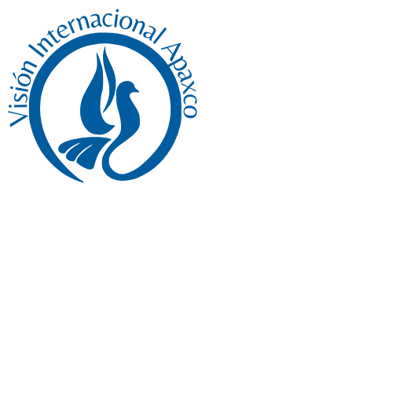

MES DE LA BIBLIA · SEPTIEMBRE 2026
Alabanza de la semana
VISIÓN INTERNACIONAL APAXCO
UN LUGAR PARA
encontrarse
CON DIOS
“Me buscarán y me encontrarán cuando me busquen de todo corazón.”
Jeremías 29:13
MES DE LA BIBLIA · SEPTIEMBRE 2026